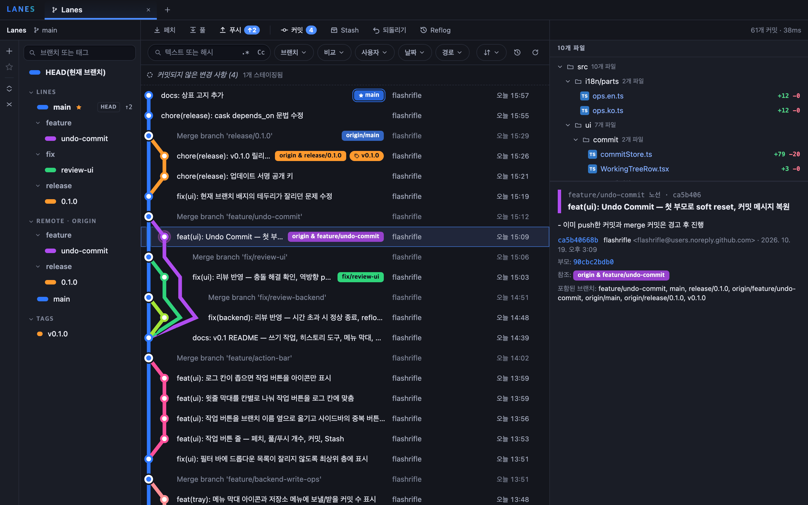

Lanes
IDE에 들어 있는 Git 로그 창을 따로 떼어 낸 듯한, 빠르고 가벼운 macOS용 Git 클라이언트. 커밋 그래프부터 커밋·push·rebase까지 IDE 없이.
$ brew install --cask flashrifle/tap/lanes

1호선 · 히스토리
한눈에 읽히는 커밋 그래프
레인 배치와 "Standard"(Bek) 정렬로 그린 그래프를 지하철 노선도처럼 보여 줍니다. 브랜치마다 처음부터 끝까지 하나의 색, merge 커밋은 환승역 모양. 커밋 10만 개 이상도 부드럽게 스크롤됩니다.
- 노선 강조 — 선이나 브랜치 배지를 클릭하면 그 줄기만 진하게, 나머지는 흐리게
- 필터 — 텍스트·해시(정규식, 대소문자), 브랜치, 사용자, 날짜, 경로. 걸러진 히스토리는 점선으로 연결
- 브랜치 비교 — 한쪽에만 있는 커밋, 양쪽 개수와 merge base
- 파일 히스토리와 blame — 이름이 바뀌어도 따라가고, blame 줄을 클릭하면 그 커밋으로 이동
- 선택한 줄 히스토리 — 몇 줄만 골라 그 부분을 바꾼 커밋만 보기(
git log -L) - Reflog — 잃어버린 커밋을 찾아 체크아웃하거나 새 브랜치로
- 좌우 비교 diff 창 — 단어 단위 하이라이트, F7로 다음 변경


2호선 · 작업
커밋부터 rebase까지 Lanes 안에서
로그 맨 위 줄에서 커밋하지 않은 변경을 바로 확인하고, 파일·hunk·줄 단위로 스테이징해 커밋합니다. 위험한 작업은 한 번 더 확인합니다.
- 커밋하지 않은 변경 — Conflicts / Staged / Unstaged / Untracked를 한눈에
- 스테이징 — 파일 단위, diff 창에서 hunk·줄 단위 stage / unstage / 변경 취소
- 커밋 — amend, sign-off, 커밋하고 바로 push. Undo Commit도
- Push — 보낼 커밋 미리 보기, upstream 설정, 태그 함께. 강제 push는 확인을 거친
--force-with-lease만 - Stash — untracked 포함, index 유지, 일부 파일만. apply / pop / drop
- Merge / Rebase — 진행 단계 표시, Continue / Skip / Abort, 충돌 파일 Ours/Theirs
- Cherry-pick · Revert · Reset · 태그 — 커밋 우클릭 메뉴. hard reset은 브랜치 이름을 입력해야 실행
- 작업 버튼 줄 — 페치, 풀 ↓n, 푸시 ↑n, 커밋, Stash, Reflog

3호선 · 메뉴 막대
창을 열지 않아도
메뉴 막대 아이콘 옆에 보낼(↑)·받을(↓) 커밋 수가 보입니다. 저장소마다 브랜치, 변경 수, 마지막 페치 시각을 확인하고 풀 / 푸시 / 페치를 바로 실행합니다.
- 빠른 커밋 — 메뉴 막대 아래 작은 창에서 파일을 골라 커밋, 또는 커밋하고 push
- 상주 — 메인 창을 닫아도 메뉴 막대에 남기(설정에서 선택)
- 백그라운드 페치 — 15 / 30 / 60분 간격, 기본은 꺼짐
- 저장소 메뉴 — 저장소별 상태와 "Lanes에서 열기"

4호선 · 그 밖에
매일 쓰기 편하게
- 탭 — 여러 저장소를 탭으로 열고, 열었던 탭과 설정을 기억. 저장소가 바뀌면 자동 새로 고침
- 한국어 / English — 시스템 언어를 따르거나 설정에서 선택
- 설정 — 행 높이, 날짜 형식, git 경로, 외부 편집기, 업데이트 확인
- 자동 업데이트 — 새 버전을 앱 안에서 알려 주고 설치(끌 수 있음)
- 이슈 보고 — 앱 버전·OS·git 버전·마지막 오류를 미리 채운 GitHub 이슈 양식
- 단축키 — ⌘T 저장소 열기, ⌘1–9 탭 이동, ⌘R 새로 고침, ⌘↩ 커밋
텔레메트리 없음
Lanes는 사용 통계를 수집하지 않습니다. 저장소 내용은 내 Mac 밖으로 나가지 않습니다.
수집하지 않습니다
텔레메트리, 분석, 사용 통계, 오류 자동 전송이 없습니다.
네트워크 요청은 하나뿐
자동으로 나가는 요청은 GitHub에서 새 버전을 확인하는 것 하나이며, 설정에서 끌 수 있습니다.
git은 내가 실행할 때만
fetch / pull / push는 직접 실행했거나 백그라운드 페치를 켰을 때만 일어납니다.
이슈 보고도 직접
미리 채운 양식을 브라우저에서 열 뿐, 확인한 뒤 직접 제출합니다. 경로의 사용자 이름은 ~로 가립니다.
자주 묻는 질문
정말 무료인가요?
네. Lanes는 Apache License 2.0을 따르는 오픈소스이고, 유료 기능이나 계정이 없습니다. 소스는 GitHub에 있습니다.
Apple 공증을 받았나요?
네. 배포되는 dmg는 Developer ID로 서명하고 Apple 공증을 받았기 때문에 Gatekeeper 경고 없이 열립니다. Apple Silicon과 Intel을 모두 지원하는 유니버설 앱입니다.
어떤 git을 쓰나요?
시스템에 설치된 git(2.23 이상)을 그대로 실행합니다. Xcode 커맨드라인 도구나 Homebrew git이면 되고, 설정에서 경로를 직접 지정할 수도 있습니다. 내 git 설정, 자격 증명, hook이 그대로 적용됩니다.
내 데이터는 어디로 가나요?
어디로도 가지 않습니다. 텔레메트리가 없고, 자동으로 나가는 네트워크 요청은 GitHub에서 새 버전을 확인하는 것 하나뿐이며 설정에서 끌 수 있습니다. 개인정보를 참고하세요.
Windows나 Linux에서도 쓸 수 있나요?
아직은 아닙니다. 지금은 macOS 11 이상만 지원합니다. Tauri 기반이라 다른 플랫폼도 가능성은 열려 있으니, 필요하다면 GitHub 이슈로 알려 주세요.